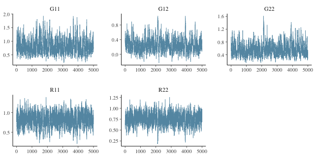
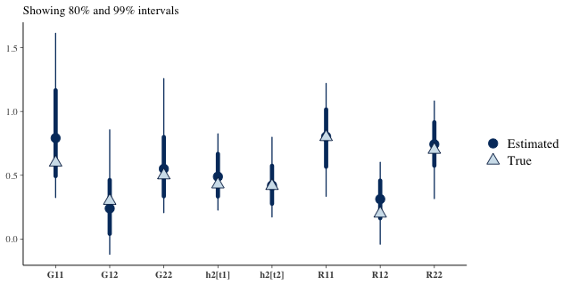

lmm_animal_gibbs() is a quick single-chain Gibbs
sampler, meant for simulations, teaching and sanity checks rather than
for inference. Its priors are inverse-Wishart on G and the
residual covariance, which differ from those of
lmm_animal(), so the two posteriors are close but not
interchangeable. It does not need CmdStan.
Simulation
Half-sib families give a block relationship matrix without any pedigree code.
set.seed(1)
n_fam <- 40; fam_size <- 8
n <- n_fam * fam_size
family <- rep(seq_len(n_fam), each = fam_size)
A <- outer(family, family, "==") * 0.5
diag(A) <- 1
G <- matrix(c(0.60, 0.30,
0.30, 0.50), 2, byrow = TRUE)
E <- matrix(c(0.80, 0.20,
0.20, 0.70), 2, byrow = TRUE)
X <- cbind(Intercept = 1, sex = rbinom(n, 1, 0.5))
B <- cbind(c(1.0, 0.5), c(-1.0, -0.2))
Y <- X %*% B +
t(chol(A)) %*% matrix(rnorm(n * 2), n) %*% chol(G) +
matrix(rnorm(n * 2), n) %*% chol(E)
colnames(Y) <- c("t1", "t2")
h2_true <- diag(G) / diag(G + E)Fit
iter, warmup and thin count
Gibbs iterations, not Hamiltonian trajectories. Successive draws are
autocorrelated, so the effective sample size is much smaller than the
number of draws; this run keeps 5,000 of 20,000 iterations and takes a
few seconds.
gibbs <- lmm_animal_gibbs(Y, X, A, iter = 20000, warmup = 5000, thin = 3)
str(gibbs, max.level = 1)
#> List of 5
#> $ G : num [1:2, 1:2, 1:5000] 0.652 0.299 0.299 0.583 0.666 ...
#> ..- attr(*, "dimnames")=List of 3
#> $ R : num [1:2, 1:2, 1:5000] 0.927 0.268 0.268 0.731 0.763 ...
#> ..- attr(*, "dimnames")=List of 3
#> $ beta : num [1:2, 1:2, 1:5000] 1.16 -1.104 0.256 -0.261 0.856 ...
#> ..- attr(*, "dimnames")=List of 3
#> $ h2 : num [1:2, 1:5000] 0.413 0.444 0.466 0.494 0.451 ...
#> ..- attr(*, "dimnames")=List of 2
#> $ iterations: num [1:5000] 5003 5006 5009 5012 5015 ...The draws are plain arrays: G and R are k
by k by draws, beta is traits by fixed effects by draws,
h2 is traits by draws. fit_draws() gives the
same named arrays as for the Stan models, with the residual covariance
named E.
gibbs_post <- fit_draws(gibbs)
round(draws_mean(gibbs_post, "G"), 2); round(G, 2)
#> t1 t2
#> t1 0.79 0.24
#> t2 0.24 0.55
#> [,1] [,2]
#> [1,] 0.6 0.3
#> [2,] 0.3 0.5
round(draws_mean(gibbs_post, "E"), 2); round(E, 2)
#> t1 t2
#> t1 0.80 0.31
#> t2 0.31 0.74
#> [,1] [,2]
#> [1,] 0.8 0.2
#> [2,] 0.2 0.7
round(draws_mean(gibbs_post, "beta"), 2); t(B)
#> Intercept sex
#> t1 1.09 0.50
#> t2 -0.95 -0.38
#> [,1] [,2]
#> [1,] 1 0.5
#> [2,] -1 -0.2
round(rbind(estimate = draws_mean(gibbs_post, "h2"), truth = h2_true), 2)
#> t1 t2
#> estimate 0.49 0.42
#> truth 0.43 0.42Summaries as posterior draws
Flattening the arrays into a draws matrix makes
posterior and bayesplot apply.
gibbs_draws <- posterior::as_draws_matrix(cbind(
G11 = gibbs$G[1, 1, ], G12 = gibbs$G[1, 2, ], G22 = gibbs$G[2, 2, ],
R11 = gibbs$R[1, 1, ], R12 = gibbs$R[1, 2, ], R22 = gibbs$R[2, 2, ],
`h2[t1]` = gibbs$h2[1, ], `h2[t2]` = gibbs$h2[2, ]))
posterior::summarise_draws(gibbs_draws)
#> # A tibble: 8 × 10
#> variable mean median sd mad q5 q95 rhat ess_bulk ess_tail
#> <chr> <dbl> <dbl> <dbl> <dbl> <dbl> <dbl> <dbl> <dbl> <dbl>
#> 1 G11 0.792 0.746 0.262 0.243 0.442 1.29 1.00 309. 472.
#> 2 G12 0.240 0.220 0.174 0.155 -0.00651 0.547 1.00 267. 354.
#> 3 G22 0.551 0.523 0.192 0.172 0.295 0.901 1.00 304. 401.
#> 4 R11 0.804 0.816 0.174 0.170 0.501 1.08 1.00 354. 478.
#> 5 R12 0.313 0.318 0.119 0.117 0.120 0.502 1.00 322. 357.
#> 6 R22 0.743 0.743 0.137 0.131 0.513 0.958 1.00 380. 432.
#> 7 h2[t1] 0.489 0.478 0.126 0.127 0.300 0.717 1.00 298. 426.
#> 8 h2[t2] 0.420 0.411 0.117 0.117 0.245 0.630 1.00 298. 370.
bayesplot::color_scheme_set("blue")
bayesplot::mcmc_trace(gibbs_draws, pars = c("G11", "G12", "G22", "R11", "R22"))
plot of chunk trace
truth <- c(G11 = G[1, 1], G12 = G[1, 2], G22 = G[2, 2],
R11 = E[1, 1], R12 = E[1, 2], R22 = E[2, 2],
`h2[t1]` = h2_true[[1]], `h2[t2]` = h2_true[[2]])
bayesplot::mcmc_recover_intervals(gibbs_draws, true = truth,
prob = 0.8, prob_outer = 0.99,
point_est = "mean")
plot of chunk intervals